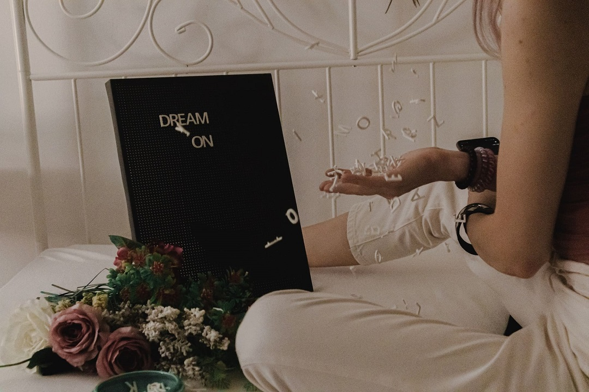

Толкование снов

Каждому снился хоть раз яркий или очень эмоциональный сон, или такой сон, когда после пробуждения кажется, что он очень важен и события сна несут некий смысл. Некоторые сломя голову бегут читать сонники, раньше они были одним из атрибутов домашней библиотеки, сейчас же достаточно просто загуглить информацию и попасть на непонятные сайты, которые расскажут всю подноготную вашего сна.
Сразу отметим, что даже хорошему психологу или сомнологу сложно будет разгадать ваши образы. Для этого им надо будет понять для начала вас самих, ваши проблемы, страхи и переживания. Когда мы говорим про сны, а не про осознанные сновидения, то чаще всего, всё, что вы видите, это переработка вашей памяти, эмоций и переживаний. Это могут быть даже не свежие переживания, а очень старые, которые вы не отпустили в своем прошлом.
Не стоит отметать и факт того, что у каждого человека есть архетипы.
Архетип — понятие, введенное К.Г. Юнгом для обозначения изначальных первобытных образов, универсальных символов или мотивов, которые существуют в коллективном бессознательном и проявляются в сновидениях каждого из нас. Юнг предостерегал аналитиков от слепого приписывания символам сна определенных значений без ясного понимания личной ситуации сновидца. За счет архетипов современности и прошлых поколений у нас могут совпадать какие-то образы.
Сонник говорит: Деньги — улучшение финансового положения, собственная смерть — к счастью и долголетию. Часть толкований может у вас совпасть один в один, потому что это избыток переживаний.
Пример: вы переживаете о завтрашнем дне, потому что от вас зависит как пройдет встреча по работе и будет ли подписан крупный проект. Ночью вам снятся деньги. Проект подписан — деньги получены, вуаля — толкование совпадает.
Таких примеров много, наша невнимательность порождает веру, но суть чаще всего проста. Мы не привыкли разбираться в себе, своих мыслях и эмоциях, а про сновидения вообще можно промолчать.
Самый эффективный способ толковать свои сны, знаки и события, которые наблюдаете — это осознанный сон. Научившись управлять сновидениями, вы сможете научиться работать с архетипами и образами. Там даже не обязательно что-то систематизировать или выстраивать структуру образов, можно просто завести диалог и вы получите отклик. Хотя, конечно, с архетипами придется повозиться.
Да, иногда такие сложные вещи имеют простой выход. Хорошо помогает понять свои сны, если их записывать. Вы никогда не запомните свой сон в деталях, если не запишите его. А именно детали, символы и нюансы иногда имеют решающее значение в толковании сна.
Возвращаясь к архетипам, у многих появляется вопрос, а как их вообще выявлять?
Запишите все элементы сна в одну колонку. Местность, где происходило действие, объекты, которые вас окружали, персонажи сна. Найдите свои ассоциации для каждого элемента сна. Однако не стоит превращать это в цепочку ассоциаций. Если вам приснился бабушкин домик, то правильно подобранные ассоциации будут выглядеть примерно так: бабушкин дом - бабушка - уют - дом - вкусная еда и так далее.
Цепочка ассоциаций уведет вас от первоначального символа. Пример цепочки: дом бабушки – бабушка (я вспоминаю, что бабушка недавно умерла) – смерть – одиночество – горе. Три последние ассоциации связаны с бабушкой, но не с домом бабушки.
Поиск ассоциаций – кропотливая работа. Но она стоит того. Душевная работа часто похожа на собирание ягод: собираешь по ягоде – наберешь корзинку. Так что в работе со снами вам понадобится терпение.